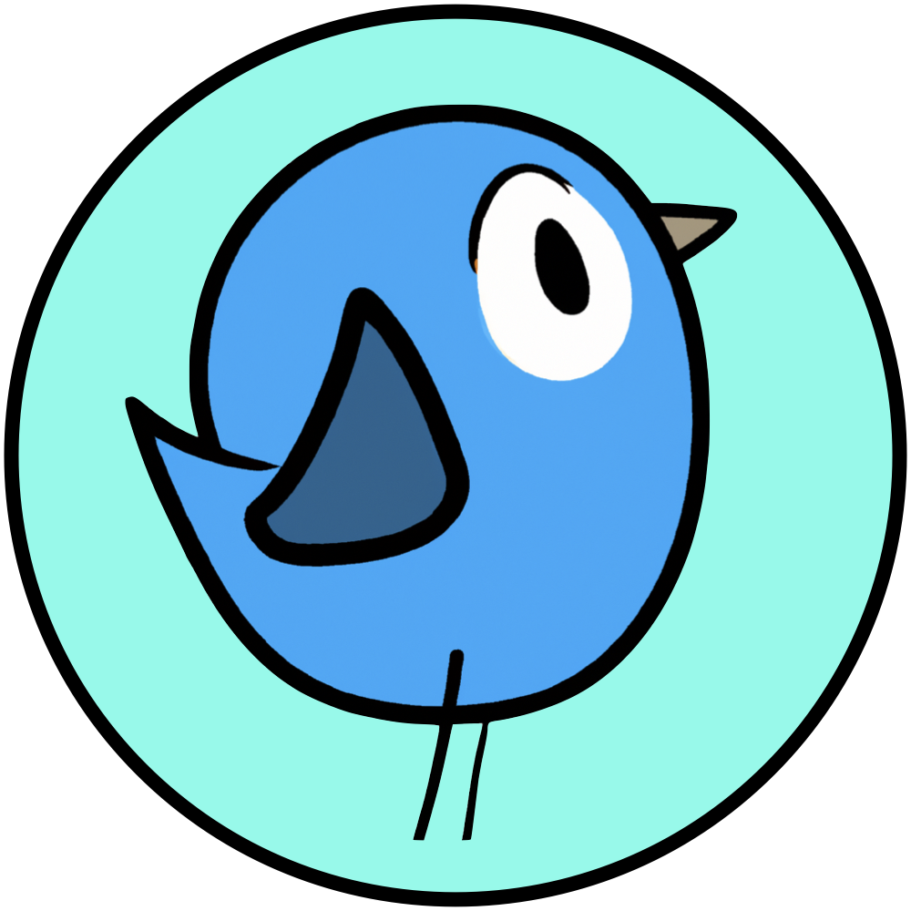

Peersky Browser
A minimal p2p web browser.
Download
pre-release
Have you ever wondered what it'd be like if the internet wasn't controlled by a handful of big companies? That's what the distributed web, or dWeb, is all about. It's a new kind of internet that operates on a network of computers where everyone shares and cooperates. This way, no single entity can control or shut it down. It's like turning the entire web into a giant, global community project.
Peersky is your personal gatekeeper to a new way of accessing web content. Imagine a world where you can access web pages from anyone in a network who has a copy of it, rather than depending on a single website server.
Peersky runs a local IPFS node, that fetches and displays web content directly from the decentralized network. It effortlessly recognizes web addresses starting with "ipfs://" or "ipns://", making your browsing experience both offline-friendly and decentralized.
Why peersky?
Our goal with Peersky is to construct a P2P web browser designed not
just for tech-savvy individuals, but for everyone. We offer an array of
curated in-browser features like 'peersky://uploads', 'peersky://analytics',
'peersky://chat', and more, aiming to create a user-friendly experience for all.